#benthic dataset
Y1Benthic <- read_excel("C:/Users/sjurriaa/Australian Institute of Marine Science/Carly Randall - Randall Lab/CAD/CAD Field Data/2022_Deployment_Saskia_YEAR1/Benthic/Quadrats_t0/Data/Benthic data xlsx.xlsx",
na = "na")
#survival dataset
survival_master <- read_excel("C:/Users/sjurriaa/Australian Institute of Marine Science/Carly Randall - Randall Lab/CAD/CAD Field Data/2022_Deployment_Saskia_YEAR1/Survival data/2022_Deployment_Saskia_MasterData.xlsx",
sheet = "Survival", na = "NA")
#environmental dataset
Y1Environment <- read_excel("C:/Users/sjurriaa/Australian Institute of Marine Science/Carly Randall - Randall Lab/CAD/CAD Year1/data/YEAR1 Benthic Environment ReefDev.xlsx",
na = "NA")Benthic Community Composition –> following the multivariate example of Murray
Preparations
Load the necessary libraries
Load the data
Upload benthic and survival dataset
Create subset of the survival with final census
#select final census timepoint which is t3 for Heron and t6 for Davies and Moore
survival_master_H <- survival_master |>
filter(Reef == "Heron",
Census == "t3",
Tab_ID == 1)
survival_master_MD <- survival_master |>
filter(Census == "t6",
!Reef == "Heron",
Tab_ID ==1)
#combine t3 Heron and t6 Moore&Davies in one dataframe that is named Y1Survival and select only columns ReefDev and SurvDev which is renamed Survival
survival_t6<-rbind(survival_master_MD,survival_master_H)
Y1Survival <- survival_t6 |>
select(Reef, Site, ReefDev, SurvDev) |>
rename(Survival = SurvDev)
#free up space
remove(survival_master, survival_master_H, survival_master_MD, survival_t6)
#Mutate data to indicate if factor or numeric
Y1Survival <- Y1Survival %>%
mutate(ReefDev=factor(ReefDev),
Reef=factor(Reef),
Site=factor(Site),
Survival=as.numeric(Survival))
Y1Benthic <- Y1Benthic %>%
mutate(ReefDev=factor(ReefDev),
Reef=factor(Reef),
Site=factor(Site))Group benthic variables
Group all Acro growth forms together and all Hard Coral growth forms
Y1Benthic.grouped <- Y1Benthic |>
mutate(Acro = Acro_br+Acro_dig+Acro_cor+Acro_tab+Acro_bot,
HC = HC_en +HC_br +HC_fol +HC_mas +HC_sm +HC_free) |>
select(-c(Acro_br,Acro_dig,Acro_cor,Acro_tab,Acro_bot,HC_en,HC_br,HC_fol,HC_mas,HC_sm,HC_free))-----------------------------------------------
Davies
Prep data
davies.benthic <- Y1Benthic.grouped |>
filter((Reef == "Davies"))
davies.benthic.clean <- Y1Benthic.grouped |>
filter((Reef == "Davies")) |>
select(-c(Reef, ReefDev))Explore data
davies.benthic.clean[,-1] |>
ggpairs(lower = list(continuous = "smooth"),
diag = list(continuous = "density"),
axisLabels = "show")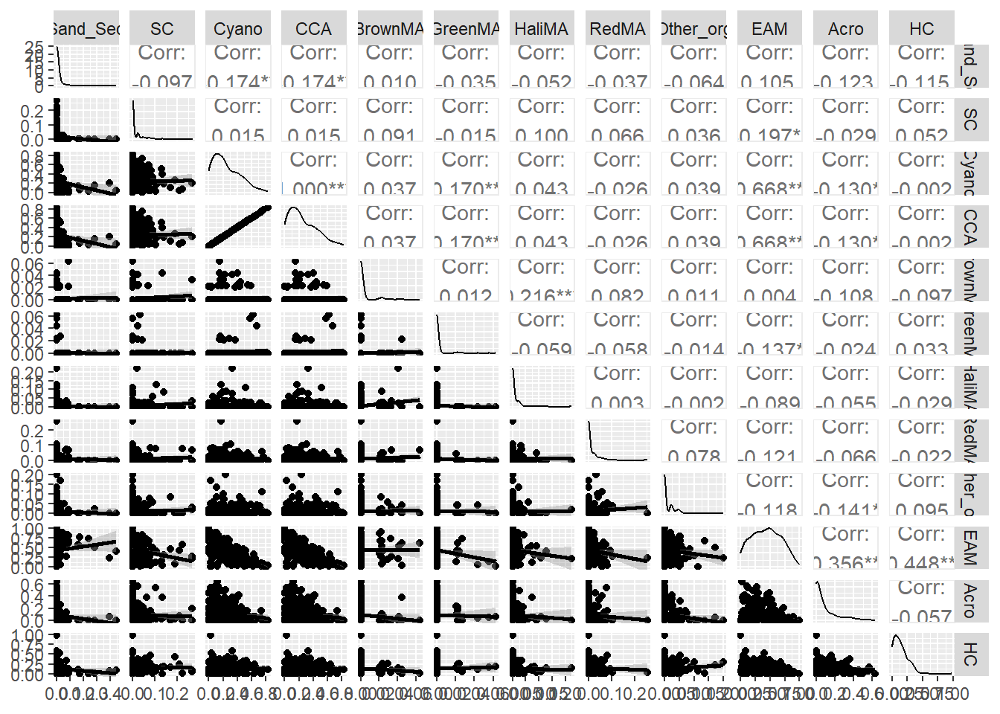
Fourth-root transformation
davies.benthic.clean[,-1]^0.25 |> #fourthroot transformation
ggpairs(lower = list(continuous = "smooth"),
diag = list(continuous = "density"),
axisLabels = "show")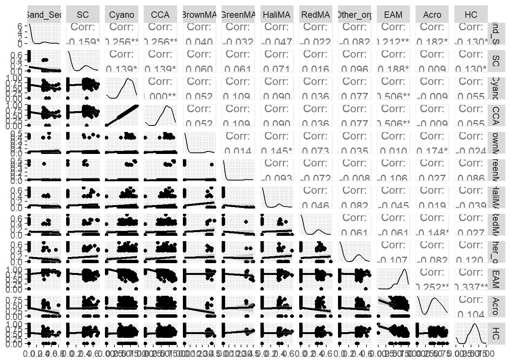
## maybe slightly better??Cyano and CCA are strongly correlated thus will be grouped together - OR better to choose just one? Let’s go with CCA
davies.benthic.CCACyano <- davies.benthic.clean |>
mutate(CCACyano = CCA + Cyano) |>
select(-c(Cyano,CCA))
davies.benthic.CCA <- davies.benthic.clean |>
select(-c(Cyano))davies.benthic.CCACyano[,-1]^0.25 |> #fourthroot transformation
ggpairs(lower = list(continuous = "smooth"),
diag = list(continuous = "density"),
axisLabels = "show")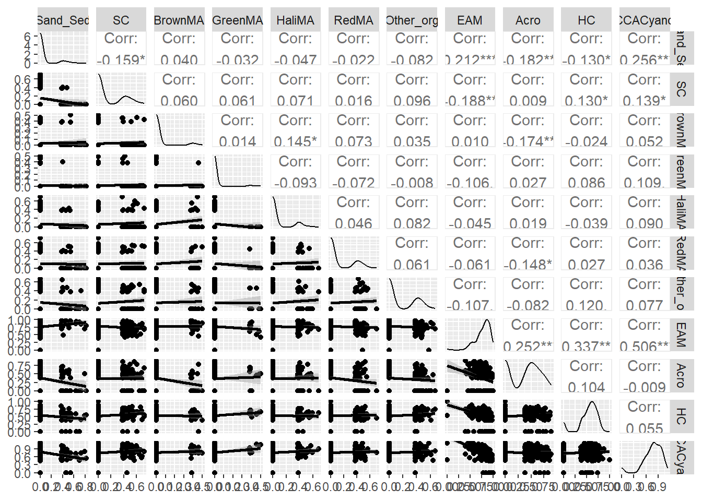
davies.benthic.CCA[,-1]^0.25 |> #fourthroot transformation
ggpairs(lower = list(continuous = "smooth"),
diag = list(continuous = "density"),
axisLabels = "show")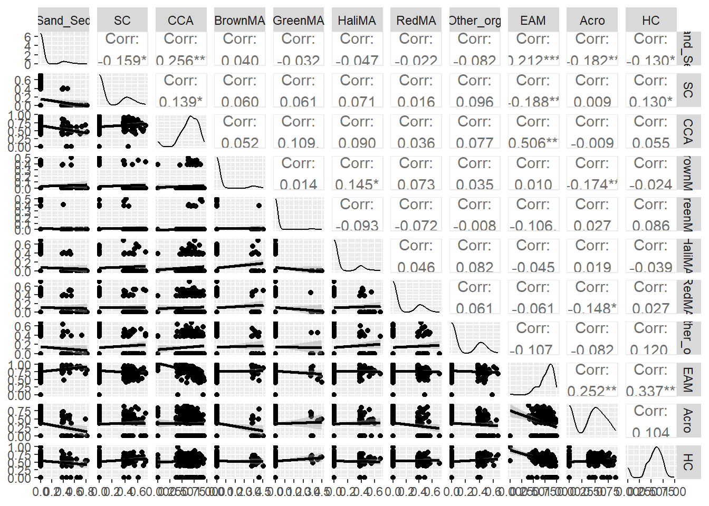
## MAKES NO DIFFERENCE BETWEEN GROUPING CCA AND CYANO OR ONLY KEEPING ONE VARIABLE
## KEEPING DATAFRAME WITH ONLY CCA MOVING FORWARDFree up space
#free up space
remove(davies.benthic.CCACyano)
remove(davies.benthic.clean)Standardize
davies.std <- (davies.benthic.CCA[,-1]^0.25) |>
wisconsin()RDA
davies.rda <- rda(davies.std, scale=FALSE) #rda and the name of your standardized data
# scale is TRUE - to run on correlation
summary(davies.rda, display=NULL)
Call:
rda(X = davies.std, scale = FALSE)
Partitioning of variance:
Inertia Proportion
Total 0.07006 1
Unconstrained 0.07006 1
Eigenvalues, and their contribution to the variance
Importance of components:
PC1 PC2 PC3 PC4 PC5 PC6
Eigenvalue 0.01413 0.01331 0.008434 0.007008 0.006643 0.006103
Proportion Explained 0.20172 0.19001 0.120376 0.100017 0.094810 0.087100
Cumulative Proportion 0.20172 0.39173 0.512110 0.612128 0.706937 0.794037
PC7 PC8 PC9 PC10
Eigenvalue 0.005077 0.004152 0.003384 0.001818
Proportion Explained 0.072460 0.059265 0.048292 0.025947
Cumulative Proportion 0.866497 0.925761 0.974053 1.000000
Scaling 2 for species and site scores
* Species are scaled proportional to eigenvalues
* Sites are unscaled: weighted dispersion equal on all dimensions
* General scaling constant of scores: Points to look for:
- keep as many axis/Principal components as necessary to get explain around 80% of variability:
#PC1:PC6
(0.01413 +0.01331 +0.008434 +0.007008 + 0.006643 + 0.006103 ) /0.07006 [1] 0.7940051screeplot(davies.rda)
abline(a=1,b=0)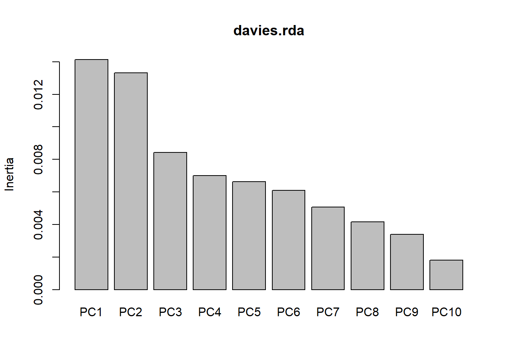
Scree plot: leveling off/change in pattern after PC4?
biplot(davies.rda)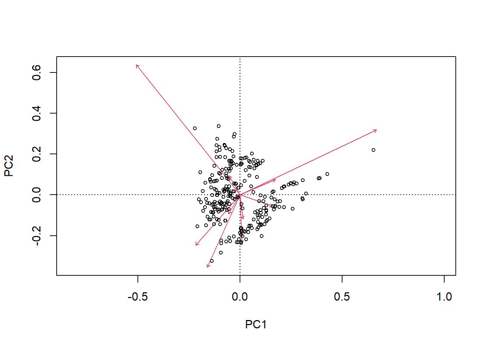
ordiplot(davies.rda, display = "species", type = "text") 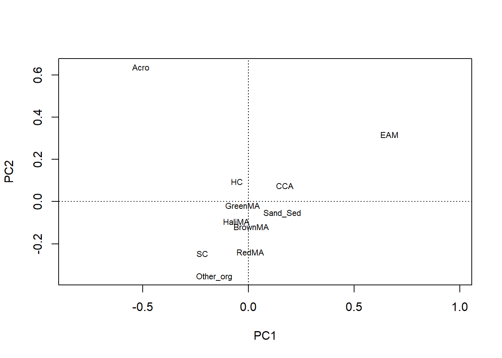
ordiplot(davies.rda, display = "sites", type = "points" ) 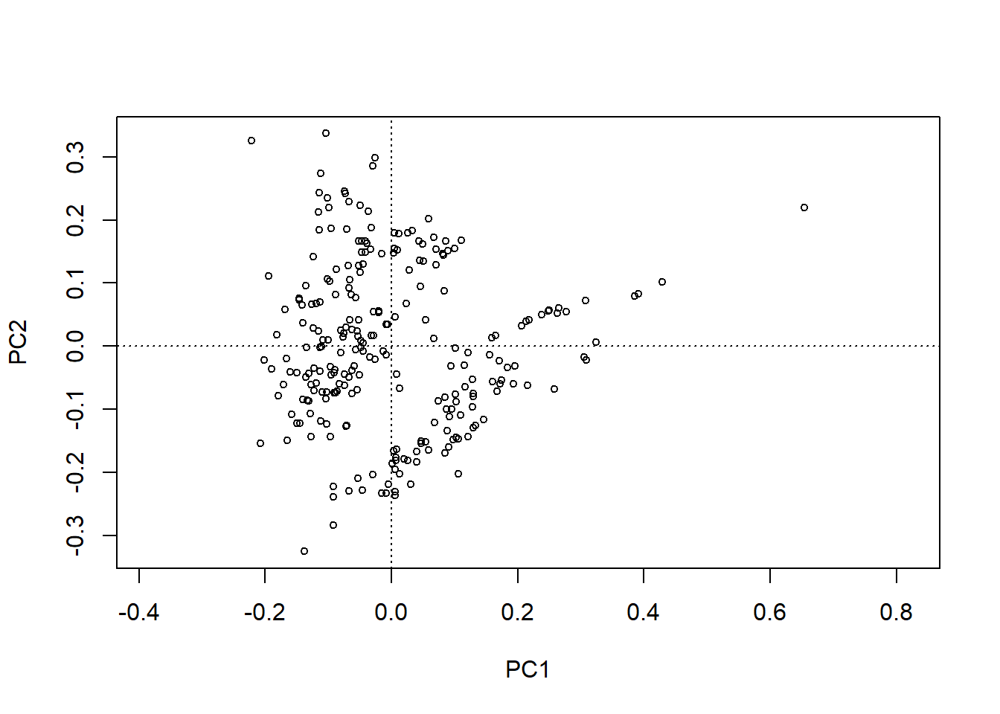
#plot(spider.rda) + theme_bw()
#auplot(spider.rda, geom='text') + theme_bw() #most informativeExtract axes values
# Extract site scores from the RDA object
davies_sites <- scores(davies.rda, display = "sites")
# Extract species scores from the RDA object
davies_species <- scores(davies.rda, display = "species")
# Create a dataframe for site scores
davies_site_df <- data.frame(
PC1 = davies_sites[, 1],
PC2 = davies_sites[, 2],
label = rownames(davies_sites) # Device ID are rows
)
# Create a dataframe for species scores
davies_species_df <- data.frame(
PC1 = davies_species[, 1],
PC2 = davies_species[, 2],
label = rownames(davies_species) # Benthic groups are rownames
)
remove(davies_sites,davies_species)Figures
davies_plot <- ggplot() +
geom_hline(yintercept = 0, linetype = 'dotted') +
geom_vline(xintercept = 0, linetype = 'dotted') +
geom_point(data = davies_site_df, aes(x = PC1, y = PC2)) +
geom_segment(data = davies_species_df, aes(x = 0, y = 0, xend = PC1, yend = PC2),
arrow = arrow(length = unit(0.3, 'lines')), color = 'red') +
geom_text(
data = davies_species_df,
aes(x = PC1 * 1.1, y = PC2 * 1.1,
label = label),
color = 'red',
size = 5, # Increase the size as needed
fontface = "plain") +
theme_minimal()
davies_plot 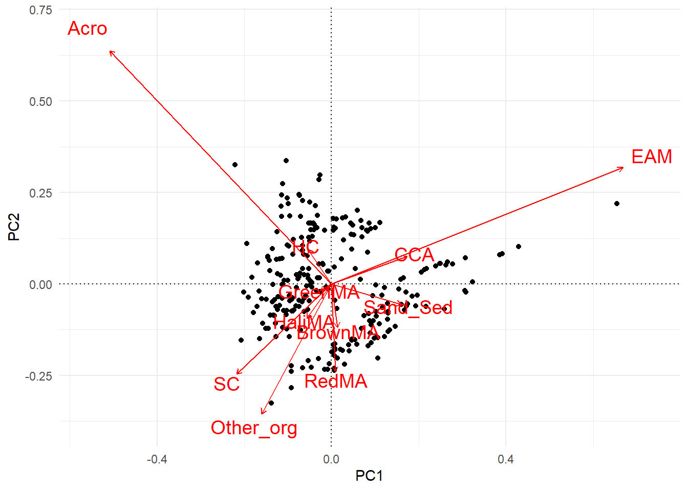
Eigenvalues
eig <- eigenvals(davies.rda)
sprintf('(%0.1f%% explained var.)', 100 * eig[2]/sum(eig)) #round it to one decimal place and substitue to f[1] "(19.0% explained var.)"paste(names(eig[2]), sprintf('(%0.1f%% explained var.)', 100 * eig[2]/sum(eig)))[1] "PC2 (19.0% explained var.)"Combine eigenvalues with plot
davies_plot <- davies_plot +
scale_y_continuous(paste(names(eig[2]), sprintf('(%0.1f%% explained var.)',
100 * eig[2]/sum(eig))))+
scale_x_continuous(paste(names(eig[1]), sprintf('(%0.1f%% explained var.)',
100 * eig[1]/sum(eig))))
davies_plot 
Draw circle
circle.prob <- 0.68 #typical this is one standard error, and the rest below is code about how to turn this into a circle
r <- sqrt(qchisq(circle.prob, df = 2)) * prod(colMeans(davies.rda$CA$u[,1:2]^2))^(1/4)
theta <- c(seq(-pi, pi, length = 50), seq(pi, -pi, length = 50))
circle <- data.frame(PC1 = r * cos(theta), PC2 = r * sin(theta))
davies_plot <- davies_plot + geom_path(data = circle, aes(y = PC2, x = PC1), color = "black", size = 1, alpha = 1/3)Warning: Using `size` aesthetic for lines was deprecated in ggplot2 3.4.0.
ℹ Please use `linewidth` instead.davies_plot 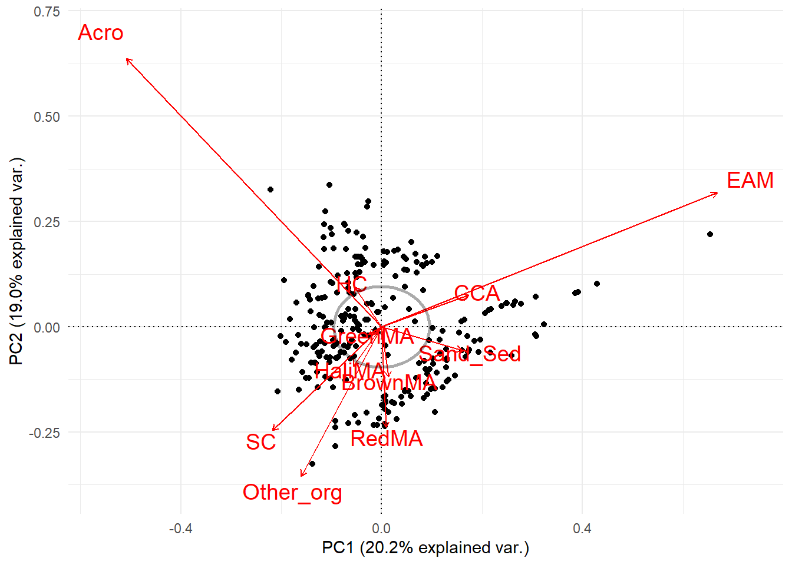
Environmental data
# load the data and filter on Davies Reef
davies.env <- Y1Environment |>
filter(Reef == "Davies") |>
select(-c(Reef, Site))
davies.env <- davies.env |>
rename(Ub = Ub_avrg,
FlowVel = median_speed,
SedTurf2 = sedturf_t2,
SedTurf5 = sedturf_t5,
SedCon2 = sedconcrete_t2,
SedCon5 = sedconcrete_t5,
Temp = mean_temp)Correlation plot to see which variables are correlated
davies.env |>
select(-c(Reef1, ReefDev, Device_ID)) |>
cor() |>
corrplot(type = 'upper',
order = 'FPC',
diag = FALSE)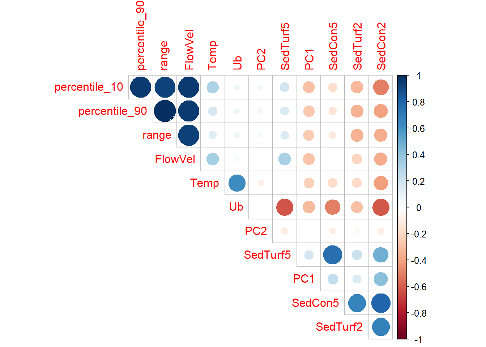
Remove strong correlated paramaters such as percentile and range for median speed, and re-run correlation plot
davies.env<- davies.env |>
select(-c(percentile_10, range, percentile_90))
davies.env |>
select(-c(Reef1, ReefDev, Device_ID)) |>
cor() |>
corrplot(type = 'upper',
order = 'FPC',
diag = FALSE)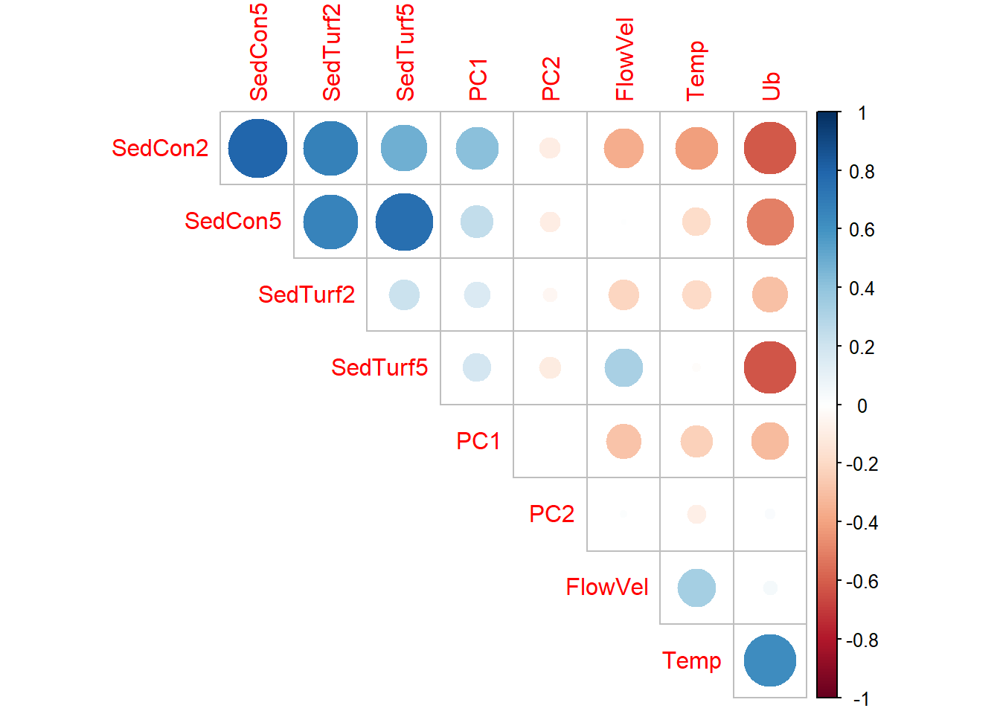
Optional - Check for correlation through scatter matrix (same thing as correlation plot)
davies.env |>
select(-c(Device_ID, ReefDev)) |>
ggpairs(lower = list(continuous = "smooth"),
diag = list(continuous = "density"),
axisLabels = "show")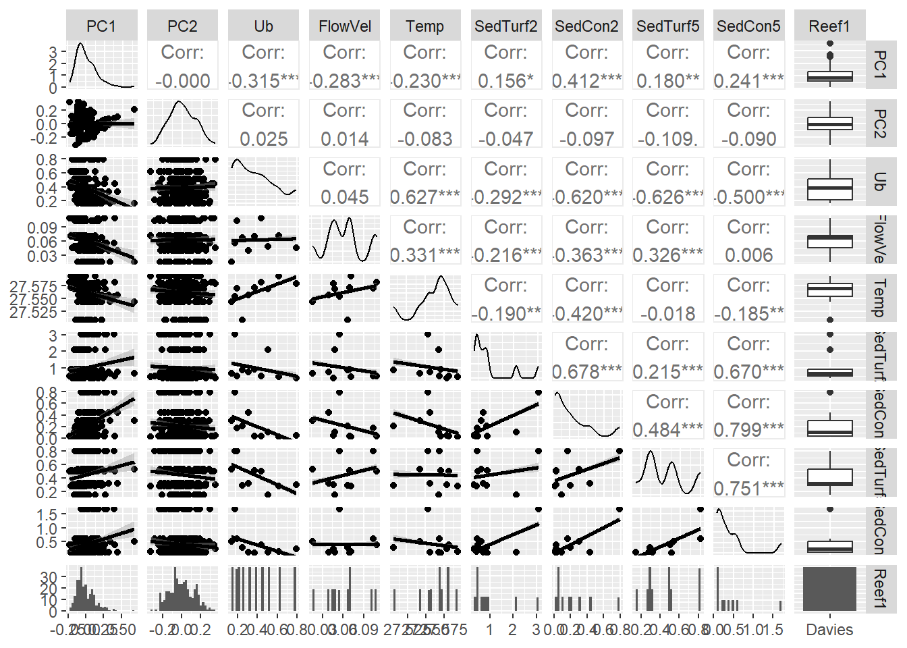
Permutation test
First check benthic data for missing rows
davies.benthic |>
group_by(Site) |>
summarise(count = n())# A tibble: 10 × 2
Site count
<fct> <int>
1 D1A 24
2 D1B 25
3 D2A 25
4 D2B 25
5 D3A 25
6 D3B 25
7 D4A 25
8 D4B 25
9 D5A 25
10 D5B 25One observation is missing for site D1a - thus will need to remove one row from rows 1-15
# Remove one row from davies.env because of missing observation in davies.rda
#davies.env <- davies.env[-1,]library(vegan)
davies.envfit <- envfit(davies.rda, env = davies.env)
davies.envfit$vectors PC1 PC2 r2 Pr(>r)
PC1 0.99995 -0.01048 0.7485 0.001 ***
PC2 0.02668 0.99964 0.6533 0.001 ***
Ub -0.99687 0.07908 0.1001 0.001 ***
FlowVel -0.99884 0.04820 0.0802 0.001 ***
Temp -0.94105 -0.33828 0.0597 0.001 ***
SedTurf2 0.95660 -0.29142 0.0265 0.047 *
SedCon2 0.97369 -0.22788 0.1794 0.001 ***
SedTurf5 0.85478 -0.51899 0.0445 0.004 **
SedCon5 0.93681 -0.34985 0.0664 0.002 **
---
Signif. codes: 0 '***' 0.001 '**' 0.01 '*' 0.05 '.' 0.1 ' ' 1
Permutation: free
Number of permutations: 999Envfit function - The output show that the community is impacted by every aspect of the environmental variables. However, bare in mind that these environmental variables are correlated to each other so we cannot say that they impact the community by themselves. We can also see the r2 value which shows us the correlation. Sediment (concrete) at t2 has the highest R2 of 17% so it is most likely that this is a strong driver of the community.
Now we will overlay the patterns to our graph. FORTIFY SCRIPT DOES NOT WORK
## SCRIPT DOES NOT WORK! --> fortify??
#davies.env.scores <- davies.envfit |> fortify()
# Extract vectors from davies.envfit
arrows <- davies.envfit$vectors$arrows
r_values <- davies.envfit$vectors$r
p_values <- davies.envfit$vectors$pvals
# Create a dataframe
envfit_df <- data.frame(
Variable = rownames(arrows),
PC1 = arrows[, 1],
PC2 = arrows[, 2],
R_Value = r_values,
P_Value = p_values,
stringsAsFactors = FALSE
)
# Optionally, you can set rownames as a separate column
envfit_df$Variable <- rownames(arrows)
# Your existing plot code with font customization for vector labels
davies_env_plot <- davies_plot +
geom_segment(data = envfit_df,
aes(y = 0, x = 0, yend = PC2, xend = PC1),
arrow = arrow(length = unit(0.3, 'lines')), color = 'blue') +
geom_text(data = envfit_df,
aes(y = PC2 * 1.1, x = PC1 * 1.1, label = Variable),
color = 'blue',
family = "Arial", # Change to your desired font
size = 5) +
theme_minimal() +
ggtitle("Davies Reef") +
theme(
text = element_text(family = "Arial", size = 14, face = "bold"), # Change to your desired font for the rest of the text
axis.text = element_text(family = "Arial", size = 12),
axis.title = element_text(family = "Arial", size = 14, face = "plain"),
legend.text = element_text(family = "Arial", size = 10)
)
# Print the plot
print(davies_env_plot)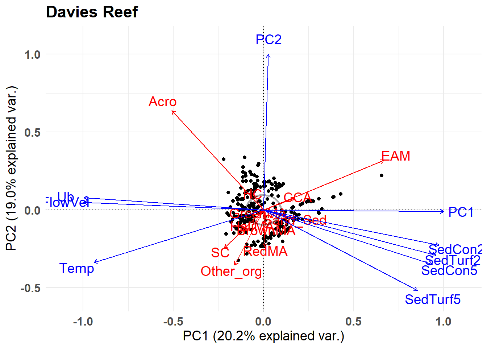
All the sediment variables point into a different direction than the other environmental variables. Ub_avrg and Median_speed are perhaps the same thing?
What is driving this community??
VIF - multicollinearity
lm(1:nrow(davies.env) ~ Ub + FlowVel + SedTurf2 + SedCon2 +SedTurf5 + SedCon5, data=davies.env) |>
vif() Ub FlowVel SedTurf2 SedCon2 SedTurf5 SedCon5
2.884700 1.942478 3.010533 6.654069 6.662051 10.782109 Values above 5 on a variance inflation scale are indicative of correlation. Thus only FlowVelocity, Ub and SedTurf2 can go in a model with each other. The other variables have a value greater than 5 so we cannot put them in a model together because they are too highly correlated and we would not be able to distinguish them.
lm(1:nrow(davies.env) ~ FlowVel + Ub + SedTurf2 , data=davies.env) |>
vif() FlowVel Ub SedTurf2
1.049375 1.093542 1.144790 Is there any evidence that the community is influenced by any of the environmental variables?
lm(davies_site_df$PC1 ~ FlowVel + Ub + SedTurf2, data=davies.env) |>
summary()
Call:
lm(formula = davies_site_df$PC1 ~ FlowVel + Ub + SedTurf2, data = davies.env)
Residuals:
Min 1Q Median 3Q Max
-0.21758 -0.07994 -0.02876 0.04885 0.54841
Coefficients:
Estimate Std. Error t value Pr(>|t|)
(Intercept) 0.158633 0.030215 5.250 3.30e-07 ***
FlowVel -1.295376 0.288770 -4.486 1.12e-05 ***
Ub -0.201824 0.040844 -4.941 1.44e-06 ***
SedTurf2 0.001613 0.009833 0.164 0.87
---
Signif. codes: 0 '***' 0.001 '**' 0.01 '*' 0.05 '.' 0.1 ' ' 1
Residual standard error: 0.1187 on 245 degrees of freedom
Multiple R-squared: 0.1719, Adjusted R-squared: 0.1618
F-statistic: 16.95 on 3 and 245 DF, p-value: 4.885e-10Yes for FlowVelocity and Ub, but not for sedimentation.
And now for PC2:
lm(davies_site_df$PC2 ~ FlowVel + Ub + SedTurf2, data=davies.env) |>
summary()
Call:
lm(formula = davies_site_df$PC2 ~ FlowVel + Ub + SedTurf2, data = davies.env)
Residuals:
Min 1Q Median 3Q Max
-0.33104 -0.08132 -0.00853 0.09304 0.32945
Coefficients:
Estimate Std. Error t value Pr(>|t|)
(Intercept) 0.002371 0.033163 0.071 0.943
FlowVel 0.018454 0.316949 0.058 0.954
Ub 0.008262 0.044829 0.184 0.854
SedTurf2 -0.006796 0.010792 -0.630 0.529
Residual standard error: 0.1303 on 245 degrees of freedom
Multiple R-squared: 0.002398, Adjusted R-squared: -0.009818
F-statistic: 0.1963 on 3 and 245 DF, p-value: 0.8989No significant values for PC2 (that explains 19% of variability).
-----------------------------------------------
Heron
Prep data
heron.benthic <- Y1Benthic.grouped |>
filter((Reef == "Heron"))
heron.benthic.clean <- Y1Benthic.grouped |>
filter((Reef == "Heron")) |>
select(-c(Reef, ReefDev))Explore data
heron.benthic.clean[,-1] |>
ggpairs(lower = list(continuous = "smooth"),
diag = list(continuous = "density"),
axisLabels = "show")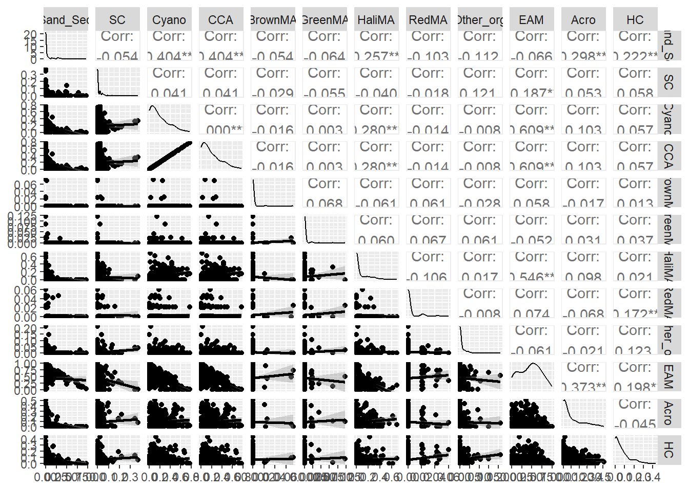
Fourth-root transformation
heron.benthic.clean[,-1]^0.25 |> #fourthroot transformation
ggpairs(lower = list(continuous = "smooth"),
diag = list(continuous = "density"),
axisLabels = "show") ## maybe slightly better??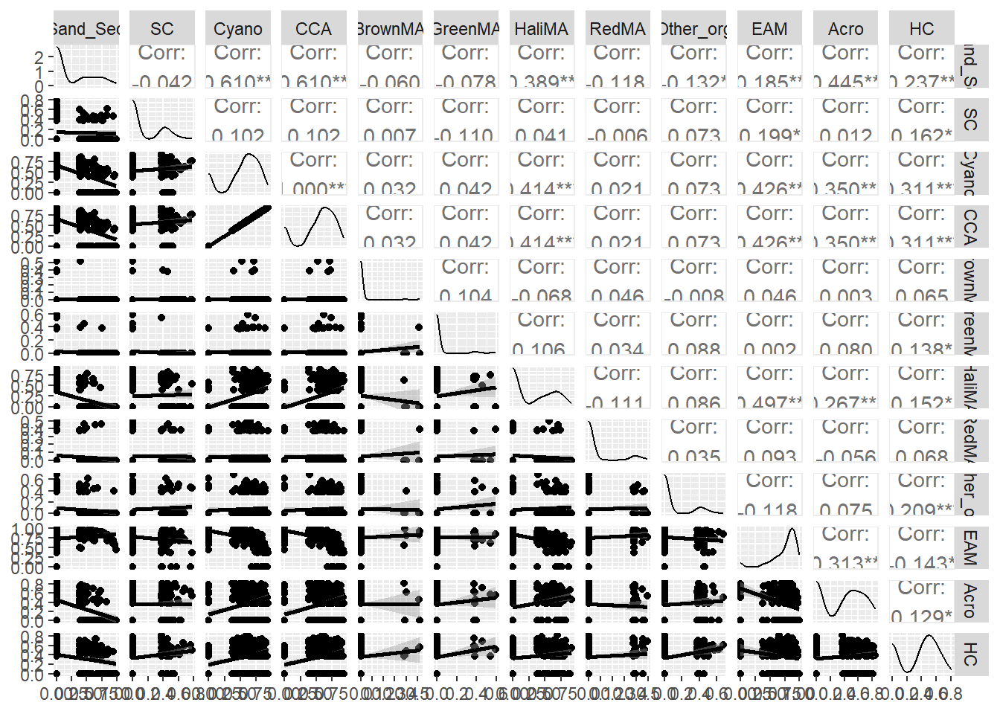
Cyano and CCA are strongly correlated just like with Davies reef thus will take only CCA going forward
heron.benthic.CCA <- heron.benthic.clean |>
select(-c(Cyano))
heron.benthic.CCA[,-1]^0.25 |> #fourthroot transformation
ggpairs(lower = list(continuous = "smooth"),
diag = list(continuous = "density"),
axisLabels = "show") 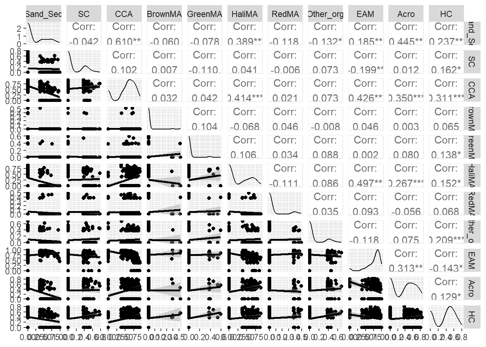
remove(heron.benthic.clean)Standardize
heron.std <- (heron.benthic.CCA[,-1]^0.25) |>
wisconsin() RDA
heron.rda <- rda(heron.std, scale=FALSE)
#rda and the name of your standardized data
# scale is TRUE - to run on correlation
summary(heron.rda, display=NULL)
Call:
rda(X = heron.std, scale = FALSE)
Partitioning of variance:
Inertia Proportion
Total 0.101 1
Unconstrained 0.101 1
Eigenvalues, and their contribution to the variance
Importance of components:
PC1 PC2 PC3 PC4 PC5 PC6
Eigenvalue 0.04019 0.01382 0.01108 0.009916 0.00694 0.006286
Proportion Explained 0.39795 0.13684 0.10972 0.098178 0.06872 0.062237
Cumulative Proportion 0.39795 0.53479 0.64451 0.742684 0.81140 0.873641
PC7 PC8 PC9 PC10
Eigenvalue 0.005515 0.00466 0.001611 0.0009758
Proportion Explained 0.054601 0.04615 0.015951 0.0096617
Cumulative Proportion 0.928242 0.97439 0.990338 1.0000000
Scaling 2 for species and site scores
* Species are scaled proportional to eigenvalues
* Sites are unscaled: weighted dispersion equal on all dimensions
* General scaling constant of scores: Points to look for:
- keep as many axis/Principal components as necessary to get explain around 80% of variability:
#PC1:PC5
(0.04019 +0.01382 +0.01108 +0.009916 + 0.00694 ) /0.101 [1] 0.8113465screeplot(heron.rda)
abline(a=1,b=0)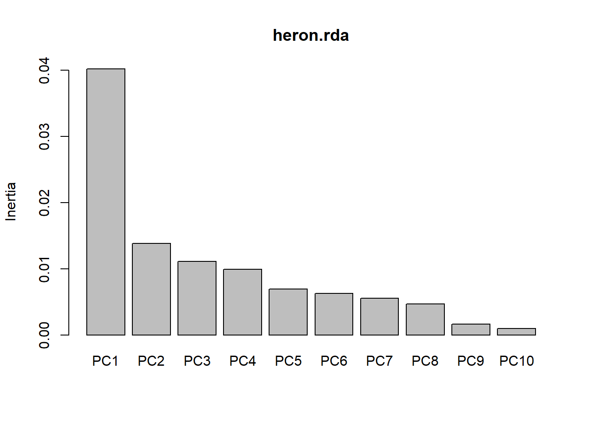
Scree plot: leveling off/change in pattern after PC4?
biplot(heron.rda) 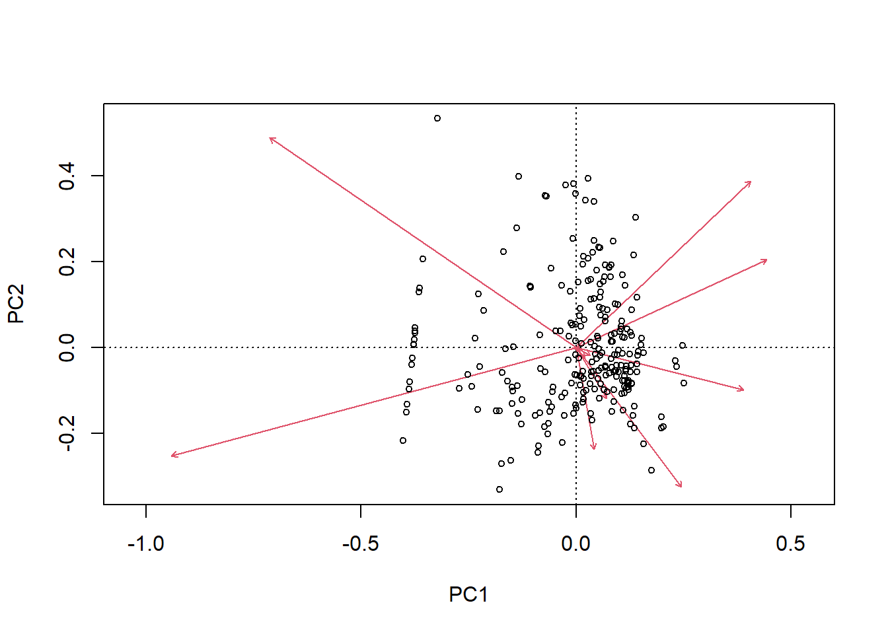
ordiplot(heron.rda, display = "species", type = "text") 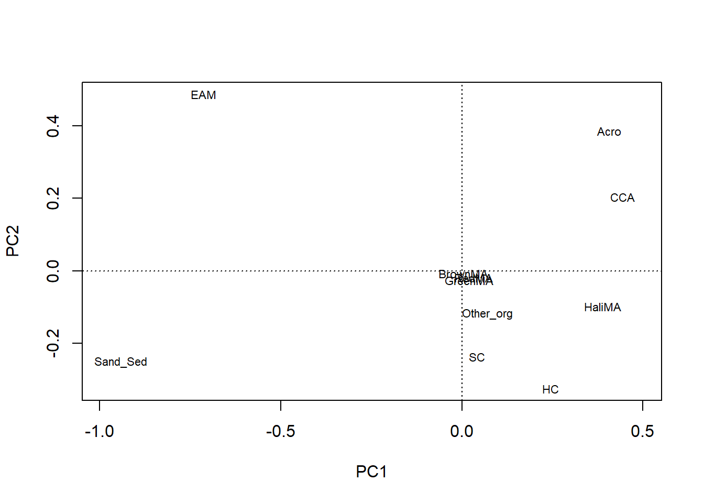
ordiplot(heron.rda, display = "sites", type = "points" ) 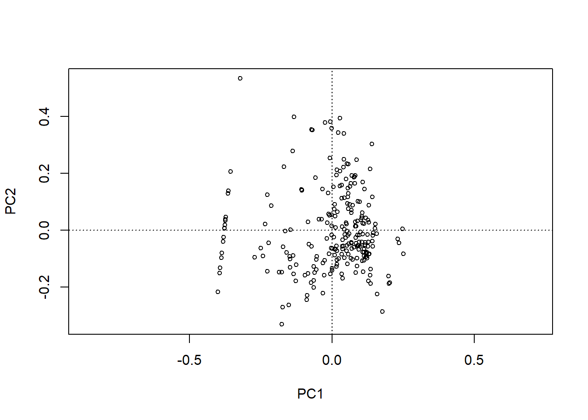
#plot(spider.rda) + theme_bw()
#auplot(spider.rda, geom='text') + theme_bw() #most informativeExtract axes values
# Extract site scores from the RDA object
heron_sites <- scores(heron.rda, display = "sites")
# Extract species scores from the RDA object
heron_species <- scores(heron.rda, display = "species")
# Create a dataframe for site scores
heron_site_df <- data.frame(PC1 = heron_sites[, 1],
PC2 = heron_sites[, 2],
label = rownames(heron_sites))
# Device ID are rows )
# Create a dataframe for species scores
heron_species_df <- data.frame(PC1 = heron_species[, 1],
PC2 = heron_species[, 2],
label = rownames(heron_species))
# Benthic groups are rownames
remove(heron_sites,heron_species)Figures
heron_plot <- ggplot() +
geom_hline(yintercept = 0, linetype = 'dotted') +
geom_vline(xintercept = 0, linetype = 'dotted') +
geom_point(data = heron_site_df, aes(x = PC1, y = PC2)) +
geom_segment(data = heron_species_df, aes(x = 0, y = 0, xend = PC1, yend = PC2),
arrow = arrow(length = unit(0.3, 'lines')), color = 'red') +
geom_text(
data = heron_species_df,
aes(x = PC1 * 1.1, y = PC2 * 1.1,
label = label),
color = 'red',
size = 5, # Increase the size as needed
fontface = "plain") +
theme_minimal()
heron_plot 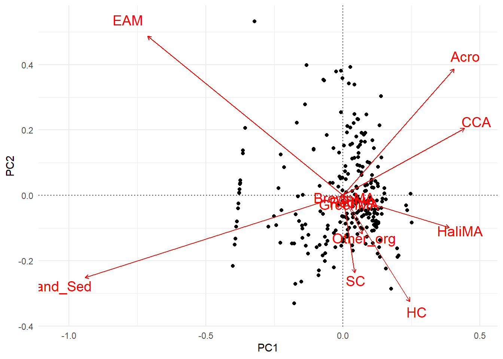
Eigenvalues
eig <- eigenvals(heron.rda)
sprintf('(%0.1f%% explained var.)', 100 * eig[2]/sum(eig)) #round it to one decimal place and substitue to f [1] "(13.7% explained var.)"paste(names(eig[2]), sprintf('(%0.1f%% explained var.)', 100 * eig[2]/sum(eig)))[1] "PC2 (13.7% explained var.)"Combine eigenvalues with plot
heron_plot <- heron_plot + scale_y_continuous(paste(names(eig[2]), sprintf('(%0.1f%% explained var.)', 100 * eig[2]/sum(eig))))+ scale_x_continuous(paste(names(eig[1]), sprintf('(%0.1f%% explained var.)', 100 * eig[1]/sum(eig))))
heron_plot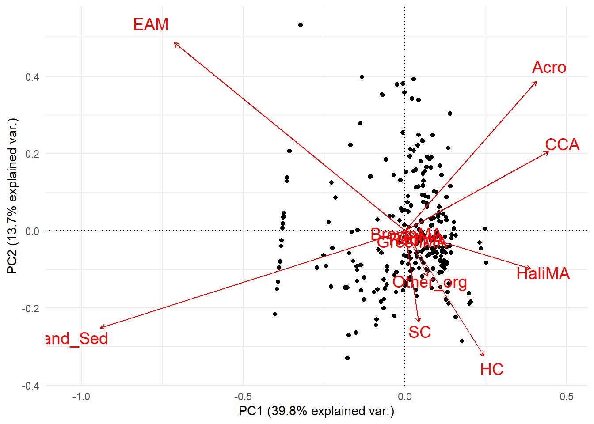
Draw circle
circle.prob <- 0.68 #typical this is one standard error, and the rest below is code about how to turn this into a circle
r <- sqrt(qchisq(circle.prob, df = 2)) * prod(colMeans(heron.rda$CA$u[,1:2]^2))^(1/4)
theta <- c(seq(-pi, pi, length = 50), seq(pi, -pi, length = 50))
circle <- data.frame(PC1 = r * cos(theta), PC2 = r * sin(theta))
heron_plot <- heron_plot + geom_path(data = circle, aes(y = PC2, x = PC1), color = "black", size = 1, alpha = 1/3)
heron_plotEnvironmental data
# load the data and filter on Heron Reef
heron.env <- Y1Environment |>
filter(Reef == "Heron") |>
select(-c(Reef, Site, sedturf_t5,sedconcrete_t5))
heron.env <- heron.env |>
select(-c(ReefDev, Reef1, Device_ID))
heron.env <- heron.env |>
rename(Ub = Ub_avrg,
FlowVel = median_speed,
SedTurf = sedturf_t2,
SedCon = sedconcrete_t2,
Temp = mean_temp)Correlation plot to see which variables are correlated
heron.env |>
cor() |>
corrplot(type = 'upper',
order = 'FPC',
diag = FALSE)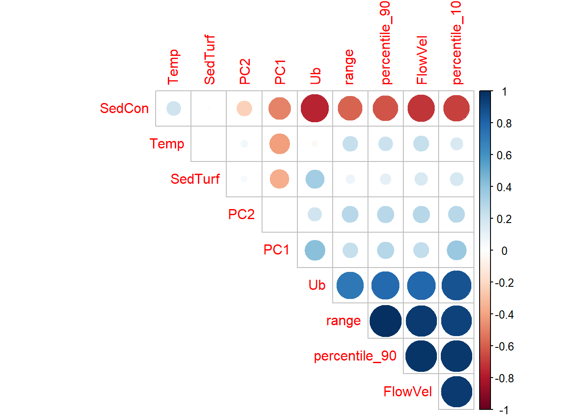
Remove strong correlated paramaters such as percentiles and range for median speed, and re-run correlation plot
heron.env<- heron.env |>
select(-c(percentile_10, range, percentile_90))
heron.env |>
cor() |>
corrplot(type = 'upper',
order = 'FPC',
diag = FALSE)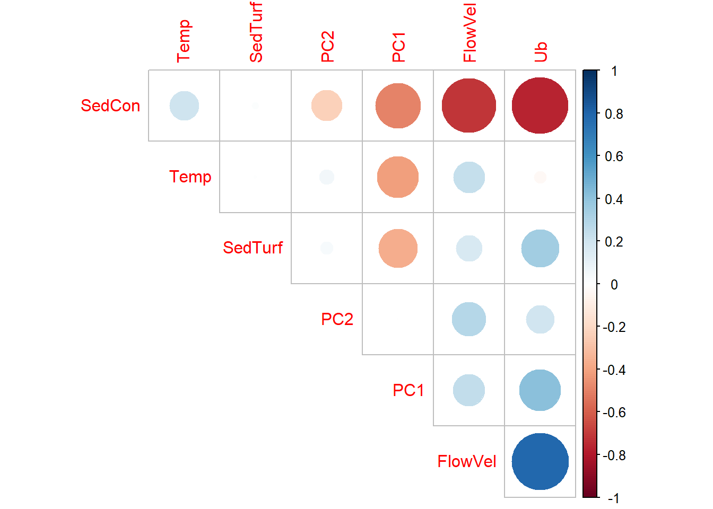
Optional - Check for correlation through scatter matrix (same thing as correlation plot)
heron.env |>
ggpairs(lower = list(continuous = "smooth"),
diag = list(continuous = "density"),
axisLabels = "show")
Permutation test
First check benthic data for missing observations
heron.benthic |>
group_by(Site) |>
summarise(count = n())# A tibble: 10 × 2
Site count
<fct> <int>
1 H1A 25
2 H1B 21
3 H2A 25
4 H2B 25
5 H3A 25
6 H3B 25
7 H4A 24
8 H4B 25
9 H5A 25
10 H5B 25We have 21 observations at site H1B and 24 observations at site H4A. Thus will need to remove 4 rows from row 26-50 and 1 row from row 151-175
# Remove five rows from heron.env because of missing observation in heron.rda
#heron.env <- heron.env[-c(26:29, 151),] Now run envfit function
library(vegan)
heron.envfit <- envfit(heron.rda, env = heron.env)
heron.envfit$vector PC1 PC2 r2 Pr(>r)
PC1 0.99998 -0.00572 0.8684 0.001 ***
PC2 0.02026 0.99979 0.7698 0.001 ***
Ub 0.90597 0.42335 0.2142 0.001 ***
FlowVel 0.65442 0.75613 0.1408 0.001 ***
Temp -0.99108 0.13326 0.1726 0.001 ***
SedTurf -0.99467 0.10309 0.1365 0.001 ***
SedCon -0.90648 -0.42225 0.2978 0.001 ***
---
Signif. codes: 0 '***' 0.001 '**' 0.01 '*' 0.05 '.' 0.1 ' ' 1
Permutation: free
Number of permutations: 999The output show that the community is impacted by every aspect of the environmental variables. However, these environmental variables are correlated to each other so we cannot say that they impact the community by themselves. We can also see the r2 value which shows us the correlation. Sediment (concrete) at t2 has the highest R2 of 29% so it is most likely that this is a strong driver of the community.
Now we will overlay the patterns to our graph. FORTIFY SCRIPT DOES NOT WORK
## SCRIPT DOES NOT WORK! --> fortify??
#heron.env.scores <- heron.envfit |> fortify()
# Extract vectors from heron.envfit
arrows <- heron.envfit$vectors$arrows
r_values <- heron.envfit$vectors$r
p_values <- heron.envfit$vectors$pvals
# Create a dataframe
envfit_df <- data.frame(Variable = rownames(arrows),
PC1 = arrows[, 1],
PC2 = arrows[, 2],
R_Value = r_values,
P_Value = p_values,
stringsAsFactors = FALSE )
# Optionally, you can set rownames as a separate column
envfit_df$Variable <- rownames(arrows)
heron_env_plot <- heron_plot +
geom_segment(data = envfit_df,
aes(y = 0, x = 0, yend = PC2, xend = PC1),
arrow = arrow(length = unit(0.3, 'lines')), color = 'blue') +
geom_text(data = envfit_df,
aes(y = PC2 * 1.1, x = PC1 * 1.1, label = Variable),
color = 'blue',
family = "Arial", # Change to your desired font
size = 5) +
theme_minimal() +
ggtitle("Heron Reef") +
theme(
text = element_text(family = "Arial", size = 14, face = "bold"), # Change to your desired font for the rest of the text
axis.text = element_text(family = "Arial", size = 12),
axis.title = element_text(family = "Arial", size = 14, face = "plain"),
legend.text = element_text(family = "Arial", size = 10)
)
heron_env_plot Warning in grid.Call(C_textBounds, as.graphicsAnnot(x$label), x$x, x$y, : font
family not found in Windows font database
Warning in grid.Call(C_textBounds, as.graphicsAnnot(x$label), x$x, x$y, : font
family not found in Windows font database
Warning in grid.Call(C_textBounds, as.graphicsAnnot(x$label), x$x, x$y, : font
family not found in Windows font database
Warning in grid.Call(C_textBounds, as.graphicsAnnot(x$label), x$x, x$y, : font
family not found in Windows font databaseWarning in grid.Call.graphics(C_text, as.graphicsAnnot(x$label), x$x, x$y, :
font family not found in Windows font database
Warning in grid.Call.graphics(C_text, as.graphicsAnnot(x$label), x$x, x$y, :
font family not found in Windows font database
Warning in grid.Call.graphics(C_text, as.graphicsAnnot(x$label), x$x, x$y, :
font family not found in Windows font database
Warning in grid.Call.graphics(C_text, as.graphicsAnnot(x$label), x$x, x$y, :
font family not found in Windows font database
Warning in grid.Call.graphics(C_text, as.graphicsAnnot(x$label), x$x, x$y, :
font family not found in Windows font database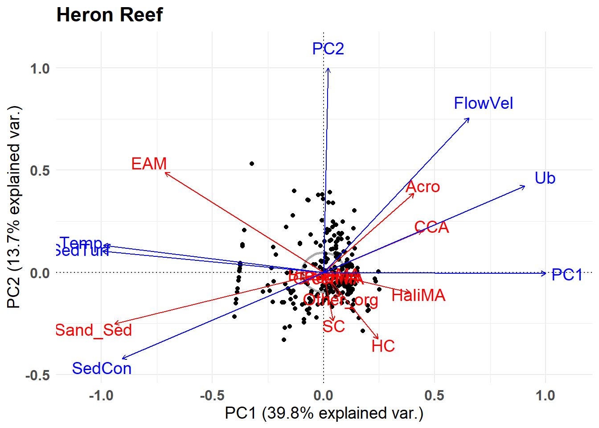
All the sediment variables point into a different direction than the other environmental variables. Ub_avrg and Median_speed are perhaps the same thing?
What is driving this community??
VIF - multicollinearity
lm(1:nrow(heron.env) ~ Ub + FlowVel + Temp + SedTurf + SedCon, data=heron.env) |>
vif() Ub FlowVel Temp SedTurf SedCon
4.581875 4.064806 1.590990 1.461614 4.191213 Values above 5 on a variance inflation scale are indicative of correlation but these are all below 5 thus can remain in the model with each other. However, temperature makes not much sense to keep in since we know that there was no spatial variation between sites.
lm(1:nrow(heron.env) ~ Ub + FlowVel + SedTurf + SedCon , data=heron.env) |>
vif() Ub FlowVel SedTurf SedCon
4.564204 2.827330 1.439335 3.275612 Is there any evidence that the community is influenced by any of the environmental variables?
lm(heron_site_df$PC1 ~ Ub + FlowVel + SedTurf + SedCon, data=heron.env) |>
summary()
Call:
lm(formula = heron_site_df$PC1 ~ Ub + FlowVel + SedTurf + SedCon,
data = heron.env)
Residuals:
Min 1Q Median 3Q Max
-0.280179 -0.056704 0.007256 0.071746 0.202973
Coefficients:
Estimate Std. Error t value Pr(>|t|)
(Intercept) 0.072253 0.035581 2.031 0.0434 *
Ub 0.582403 0.066052 8.817 2.44e-16 ***
FlowVel -1.436451 0.260541 -5.513 9.08e-08 ***
SedTurf -0.016206 0.001476 -10.979 < 2e-16 ***
SedCon -0.020836 0.011927 -1.747 0.0819 .
---
Signif. codes: 0 '***' 0.001 '**' 0.01 '*' 0.05 '.' 0.1 ' ' 1
Residual standard error: 0.09845 on 240 degrees of freedom
Multiple R-squared: 0.5314, Adjusted R-squared: 0.5236
F-statistic: 68.04 on 4 and 240 DF, p-value: < 2.2e-16Yes for bottom stress, Flow velocity and SedTurf, but not for SedCon (which is likely correlated to SedTurf anyway).
And now for PC2:
lm(heron_site_df$PC2 ~ Ub + FlowVel + SedTurf + SedCon, data=heron.env) |>
summary()
Call:
lm(formula = heron_site_df$PC2 ~ Ub + FlowVel + SedTurf + SedCon,
data = heron.env)
Residuals:
Min 1Q Median 3Q Max
-0.32128 -0.07827 -0.02478 0.07782 0.54211
Coefficients:
Estimate Std. Error t value Pr(>|t|)
(Intercept) -0.097656 0.049619 -1.968 0.05020 .
Ub -0.121266 0.092111 -1.317 0.18926
FlowVel 1.084668 0.363332 2.985 0.00313 **
SedTurf 0.001318 0.002058 0.640 0.52257
SedCon -0.021397 0.016632 -1.286 0.19951
---
Signif. codes: 0 '***' 0.001 '**' 0.01 '*' 0.05 '.' 0.1 ' ' 1
Residual standard error: 0.1373 on 240 degrees of freedom
Multiple R-squared: 0.08868, Adjusted R-squared: 0.07349
F-statistic: 5.839 on 4 and 240 DF, p-value: 0.0001685Only Flow Velocity is significant for PC2 (that explains 13.7% of variability).
-----------------------------------------------
Moore
Prep data
moore.benthic <- Y1Benthic.grouped |>
filter((Reef == "Moore"))
moore.benthic.clean <- Y1Benthic.grouped |>
filter((Reef == "Moore")) |>
select(-c(Reef, ReefDev))Explore data
moore.benthic.clean[,-1] |>
ggpairs(lower = list(continuous = "smooth"),
diag = list(continuous = "density"),
axisLabels = "show")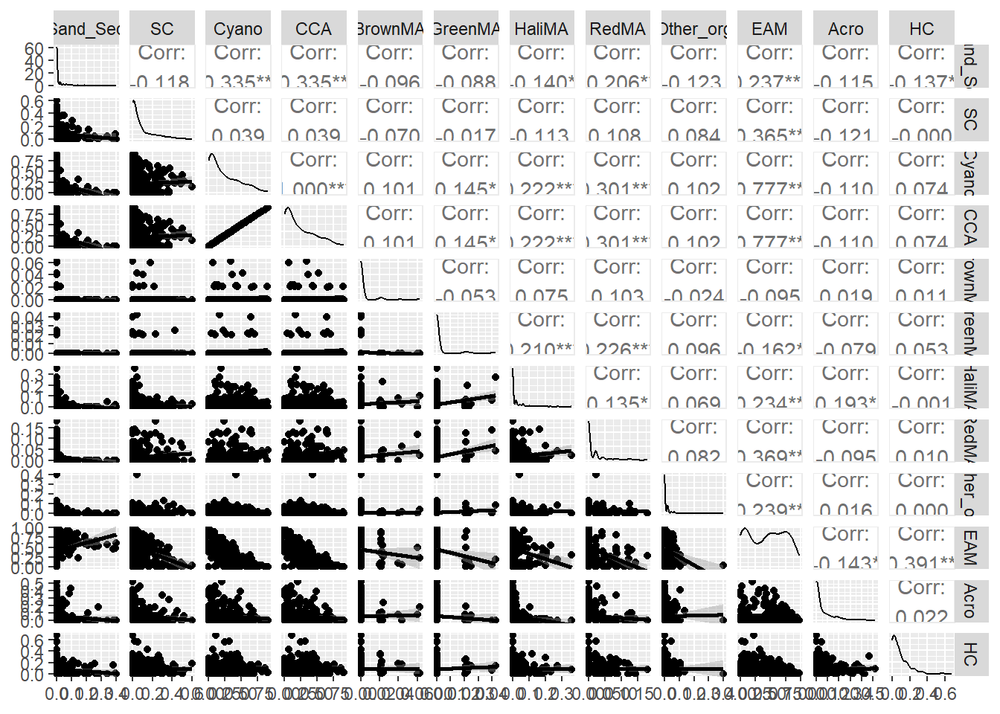
Fourth-root transformation
moore.benthic.clean[,-1]^0.25 |> #fourthroot transformation
ggpairs(lower = list(continuous = "smooth"),
diag = list(continuous = "density"),
axisLabels = "show") ## maybe slightly better??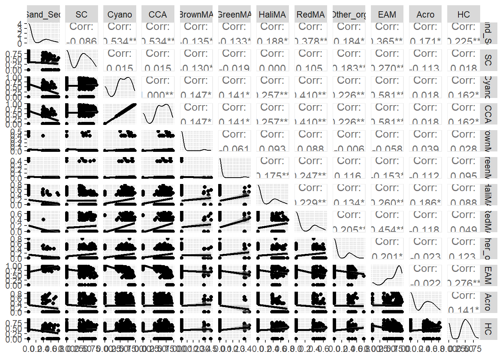
Cyano and CCA are strongly correlated just like with Davies and Heron thus will take only CCA going forward
moore.benthic.CCA <- moore.benthic.clean |>
select(-c(Cyano))
moore.benthic.CCA[,-1]^0.25 |> #fourthroot transformation
ggpairs(lower = list(continuous = "smooth"),
diag = list(continuous = "density"),
axisLabels = "show") Warning in check_and_set_ggpairs_defaults("diag", diag, continuous =
"densityDiag", : Changing diag$continuous from 'density' to 'densityDiag'Warning in geom_point(): All aesthetics have length 1, but the data has 121 rows.
ℹ Did you mean to use `annotate()`?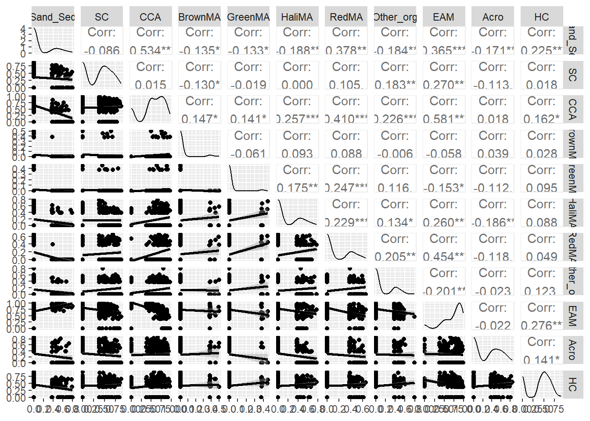
remove(moore.benthic.clean)Standardize
moore.std <- (moore.benthic.CCA[,-1]^0.25) |>
wisconsin() PCA
moore.rda <- rda(moore.std, scale=FALSE)
#rda and the name of your standardized data
# scale is TRUE - to run on correlation
summary(moore.rda, display=NULL)
Call:
rda(X = moore.std, scale = FALSE)
Partitioning of variance:
Inertia Proportion
Total 0.08844 1
Unconstrained 0.08844 1
Eigenvalues, and their contribution to the variance
Importance of components:
PC1 PC2 PC3 PC4 PC5 PC6
Eigenvalue 0.02646 0.01426 0.01098 0.008061 0.007601 0.006489
Proportion Explained 0.29918 0.16130 0.12411 0.091148 0.085944 0.073378
Cumulative Proportion 0.29918 0.46047 0.58459 0.675733 0.761677 0.835054
PC7 PC8 PC9 PC10
Eigenvalue 0.005324 0.004401 0.002963 0.001899
Proportion Explained 0.060201 0.049770 0.033507 0.021468
Cumulative Proportion 0.895255 0.945025 0.978532 1.000000
Scaling 2 for species and site scores
* Species are scaled proportional to eigenvalues
* Sites are unscaled: weighted dispersion equal on all dimensions
* General scaling constant of scores: Points to look for:
- keep as many axis/Principal components as necessary to get explain around 80% of variability:
#PC1:PC6
(0.02646 + 0.01426 + 0.01098 + 0.008061 + 0.007601 + 0.006489 ) /0.08844 [1] 0.8350407screeplot(moore.rda)
abline(a=1,b=0)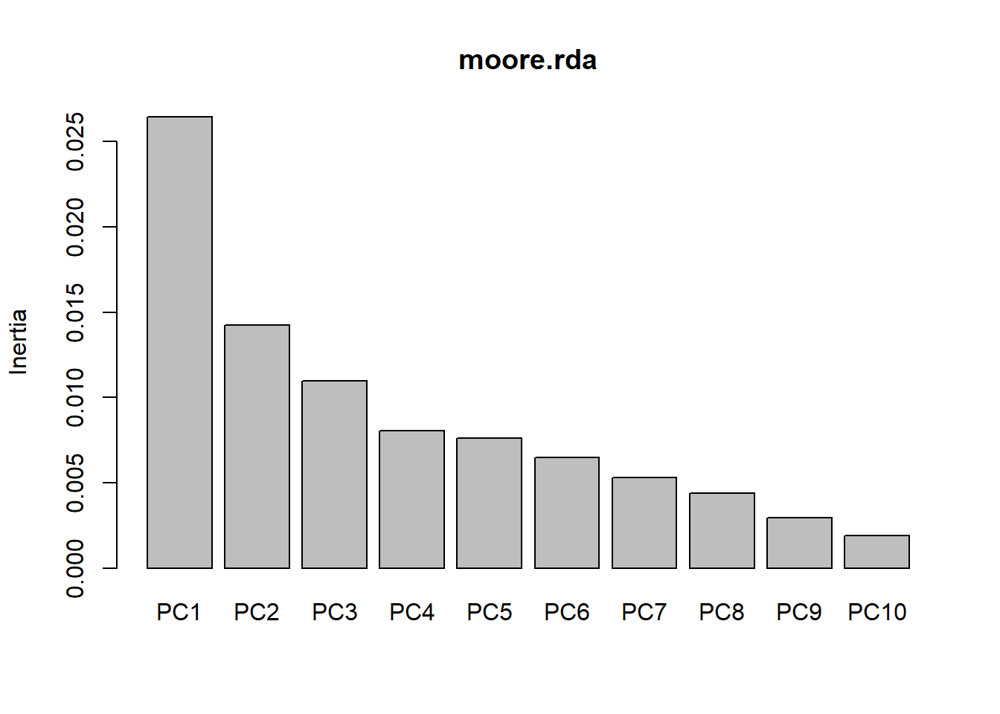
Scree plot: leveling off/change in pattern after PC4?
biplot(moore.rda) 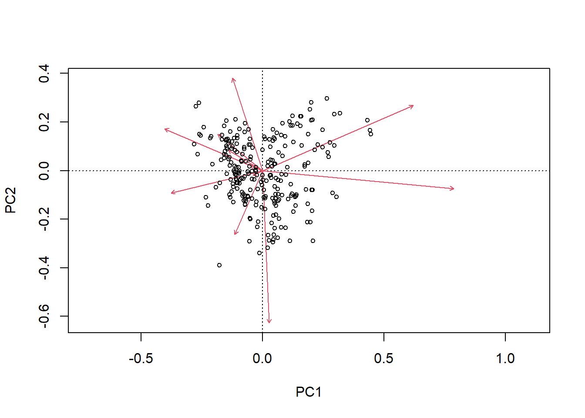
ordiplot(moore.rda, display = "species", type = "text") 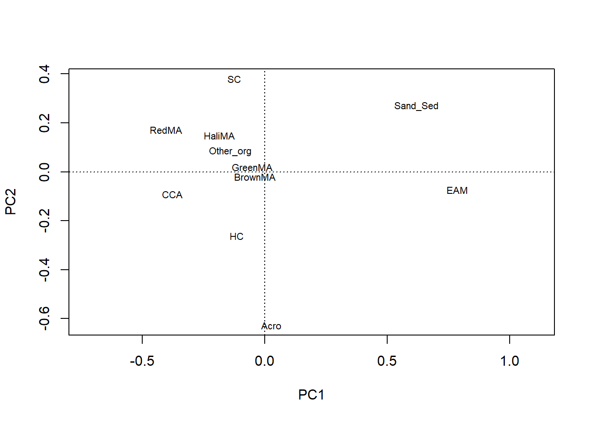
ordiplot(moore.rda, display = "sites", type = "points" ) 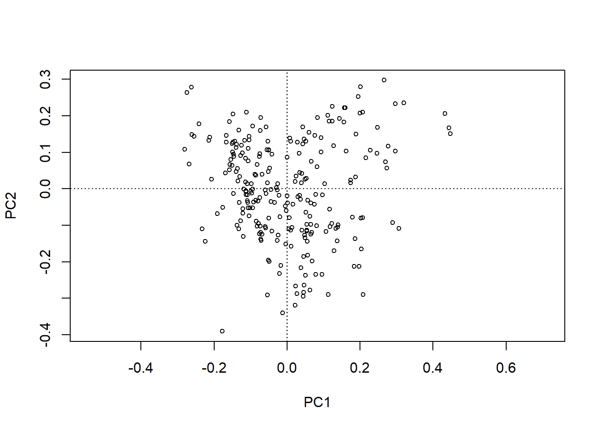
#plot(spider.rda) + theme_bw()
#auplot(spider.rda, geom='text') + theme_bw() #most informativeExtract axes values
# Extract site scores from the RDA object
moore_sites <- scores(moore.rda, display = "sites")
# Extract species scores from the RDA object
moore_species <- scores(moore.rda, display = "species")
# Create a dataframe for site scores
moore_site_df <- data.frame(PC1 = moore_sites[, 1],
PC2 = moore_sites[, 2],
label = rownames(moore_sites))
# Device ID are rows )
# Create a dataframe for species scores
moore_species_df <- data.frame(PC1 = moore_species[, 1],
PC2 = moore_species[, 2],
label = rownames(moore_species))
# Benthic groups are rownames
remove(moore_sites,moore_species)Figures
moore_plot <- ggplot() +
geom_hline(yintercept = 0, linetype = 'dotted') +
geom_vline(xintercept = 0, linetype = 'dotted') +
geom_point(data = moore_site_df, aes(x = PC1, y = PC2)) +
geom_segment(data = moore_species_df, aes(x = 0, y = 0, xend = PC1, yend = PC2),
arrow = arrow(length = unit(0.3, 'lines')), color = 'red') +
geom_text(
data = moore_species_df,
aes(x = PC1 * 1.1, y = PC2 * 1.1,
label = label),
color = 'red',
size = 5, # Increase the size as needed
fontface = "plain") +
theme_minimal()
moore_plot 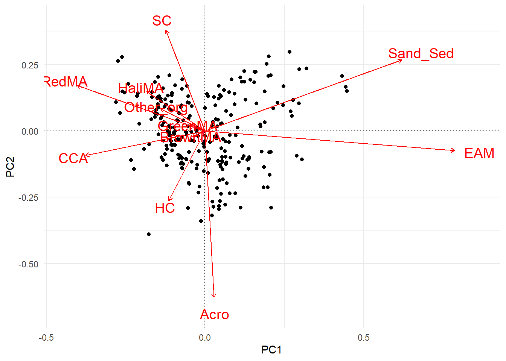
Eigenvalues
eig <- eigenvals(moore.rda)
sprintf('(%0.1f%% explained var.)', 100 * eig[2]/sum(eig)) #round it to one decimal place and substitue to f [1] "(16.1% explained var.)"paste(names(eig[2]), sprintf('(%0.1f%% explained var.)', 100 * eig[2]/sum(eig)))[1] "PC2 (16.1% explained var.)"Combine eigenvalues with plot
moore_plot <- moore_plot + scale_y_continuous(paste(names(eig[2]), sprintf('(%0.1f%% explained var.)', 100 * eig[2]/sum(eig))))+ scale_x_continuous(paste(names(eig[1]), sprintf('(%0.1f%% explained var.)', 100 * eig[1]/sum(eig))))
moore_plot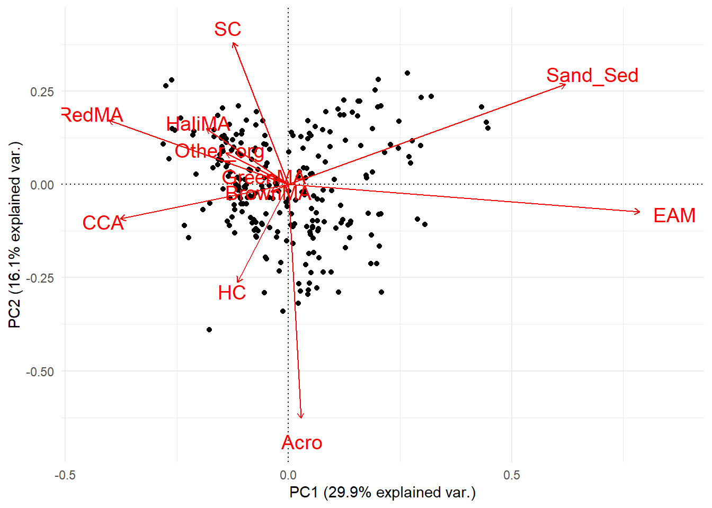
Draw circle
circle.prob <- 0.68 #typical this is one standard error, and the rest below is code about how to turn this into a circle
r <- sqrt(qchisq(circle.prob, df = 2)) * prod(colMeans(moore.rda$CA$u[,1:2]^2))^(1/4)
theta <- c(seq(-pi, pi, length = 50), seq(pi, -pi, length = 50))
circle <- data.frame(PC1 = r * cos(theta), PC2 = r * sin(theta))
moore_plot <- moore_plot +
geom_path(data = circle, aes(y = PC2, x = PC1), color = "black", size = 1, alpha = 1/3)
moore_plotEnvironmental data
# load the data and filter on Moore Reef
moore.env <- Y1Environment |>
filter(Reef == "Moore") |>
select(-c(Reef, Site, sedturf_t2, sedconcrete_t2))
moore.env <- moore.env |>
select(-c(ReefDev, Reef1, Device_ID))
moore.env <- moore.env |>
rename(Ub = Ub_avrg,
FlowVel = median_speed,
SedTurf = sedturf_t5,
SedCon = sedconcrete_t5,
Temp = mean_temp)Correlation plot to see which variables are correlated
moore.env |>
cor() |>
corrplot(type = 'upper',
order = 'FPC',
diag = FALSE)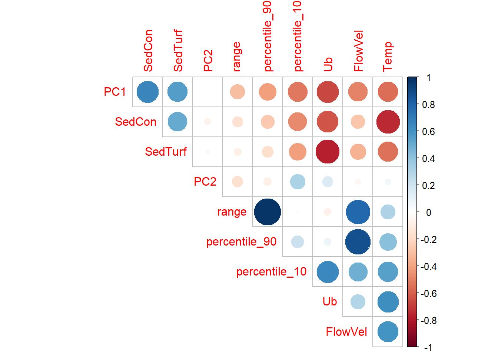
Remove strong correlated paramaters such as percentile_90 and range for median speed, and re-run correlation plot
moore.env<- moore.env |>
select(-c(range, percentile_90))
moore.env |>
cor() |>
corrplot(type = 'upper',
order = 'FPC',
diag = FALSE)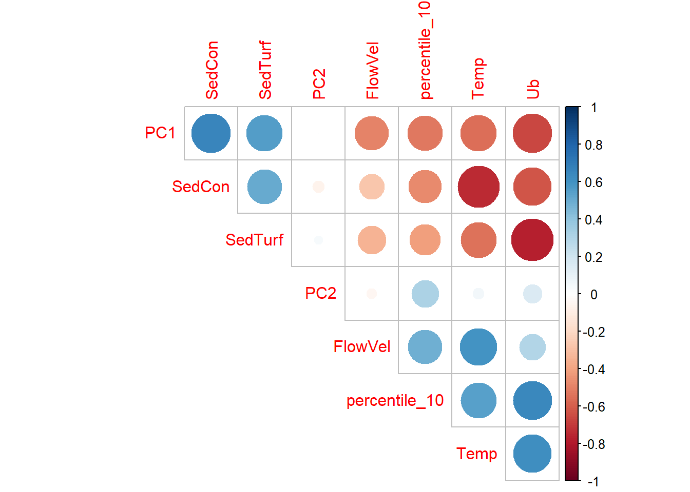
Optional - Check for correlation through scatter matrix (same thing as correlation plot)
moore.env |>
ggpairs(lower = list(continuous = "smooth"),
diag = list(continuous = "density"),
axisLabels = "show")Warning in check_and_set_ggpairs_defaults("diag", diag, continuous =
"densityDiag", : Changing diag$continuous from 'density' to 'densityDiag'Warning in geom_point(): All aesthetics have length 1, but the data has 64 rows.
ℹ Did you mean to use `annotate()`?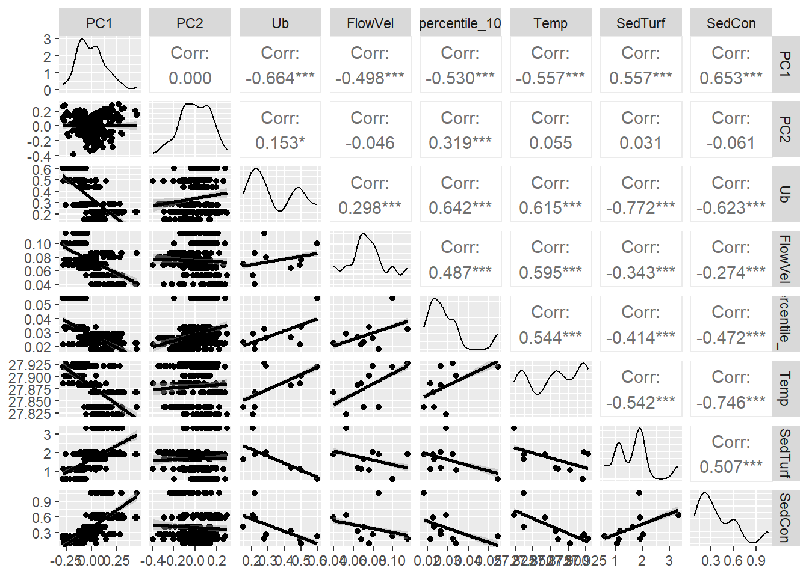
Permutation test
First check benthic data for missing observations
moore.benthic |>
group_by(Site) |>
summarise(count = n())# A tibble: 10 × 2
Site count
<fct> <int>
1 M1A 25
2 M1B 25
3 M2A 25
4 M2B 25
5 M3A 23
6 M3B 25
7 M4A 25
8 M4B 24
9 M5A 25
10 M5B 25Sites M3A and M4B have missing observations: 2 missing at M3A and one missing at M4B. Thus row 101-125 and row 176-200
# Remove five rows from heron.env because of missing observation in heron.rda
#moore.env <- moore.env[-c(101:102, 176),] Now fit envfit function
library(vegan)
moore.envfit <- envfit(moore.rda, env = moore.env)
moore.envfit
***VECTORS
PC1 PC2 r2 Pr(>r)
PC1 0.99993 0.01168 0.9117 0.001 ***
PC2 0.00076 1.00000 0.7099 0.001 ***
Ub -0.97452 0.22430 0.4647 0.001 ***
FlowVel -0.99578 -0.09177 0.2501 0.001 ***
percentile_10 -0.85660 0.51598 0.3825 0.001 ***
Temp -0.99512 0.09868 0.3138 0.001 ***
SedTurf 0.99844 0.05575 0.3117 0.001 ***
SedCon 0.99573 -0.09230 0.4297 0.001 ***
---
Signif. codes: 0 '***' 0.001 '**' 0.01 '*' 0.05 '.' 0.1 ' ' 1
Permutation: free
Number of permutations: 999The output show that the community is impacted by every aspect of the environmental variables. However, these environmental variables are correlated to each other so we cannot say that they impact the community by themselves. We can also see the r2 value which shows us the correlation. Ub_avrg has the highest r2 valua of 46% so it is most likely that this is a strong driver of the community. However, sediment (concrete) has a high r2 as well at 43%, so togther these might be strong drivers of the community.
Now we will overlay the patterns to our graph. FORTIFY SCRIPT DOES NOT WORK
## SCRIPT DOES NOT WORK! --> fortify??
#moore.env.scores <- moore.envfit |> fortify()
# Extract vectors from moore.envfit
arrows <- moore.envfit$vectors$arrows
r_values <- moore.envfit$vectors$r
p_values <- moore.envfit$vectors$pvals
# Create a dataframe
envfit_df <- data.frame(Variable = rownames(arrows),
PC1 = arrows[, 1],
PC2 = arrows[, 2],
R_Value = r_values,
P_Value = p_values,
stringsAsFactors = FALSE )
# Optionally, you can set rownames as a separate column
envfit_df$Variable <- rownames(arrows)
moore_env_plot <- moore_plot +
geom_segment(data = envfit_df,
aes(y = 0, x = 0, yend = PC2, xend = PC1),
arrow = arrow(length = unit(0.3, 'lines')), color = 'blue') +
geom_text(data = envfit_df,
aes(y = PC2 * 1.1, x = PC1 * 1.1, label = Variable),
color = 'blue',
family = "Arial", # Change to your desired font
size = 5) +
theme_minimal() +
ggtitle("Moore Reef") +
theme(
text = element_text(family = "Arial", size = 14, face = "bold"), # Change to your desired font for the rest of the text
axis.text = element_text(family = "Arial", size = 12),
axis.title = element_text(family = "Arial", size = 14, face = "plain"),
legend.text = element_text(family = "Arial", size = 10)
)
moore_env_plot Warning in grid.Call(C_textBounds, as.graphicsAnnot(x$label), x$x, x$y, : font
family not found in Windows font database
Warning in grid.Call(C_textBounds, as.graphicsAnnot(x$label), x$x, x$y, : font
family not found in Windows font database
Warning in grid.Call(C_textBounds, as.graphicsAnnot(x$label), x$x, x$y, : font
family not found in Windows font database
Warning in grid.Call(C_textBounds, as.graphicsAnnot(x$label), x$x, x$y, : font
family not found in Windows font databaseWarning in grid.Call.graphics(C_text, as.graphicsAnnot(x$label), x$x, x$y, :
font family not found in Windows font database
Warning in grid.Call.graphics(C_text, as.graphicsAnnot(x$label), x$x, x$y, :
font family not found in Windows font database
Warning in grid.Call.graphics(C_text, as.graphicsAnnot(x$label), x$x, x$y, :
font family not found in Windows font database
Warning in grid.Call.graphics(C_text, as.graphicsAnnot(x$label), x$x, x$y, :
font family not found in Windows font database
Warning in grid.Call.graphics(C_text, as.graphicsAnnot(x$label), x$x, x$y, :
font family not found in Windows font database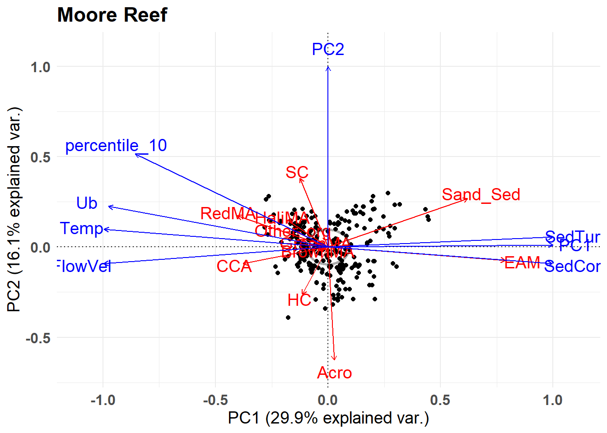
Sediment variables point into a different direction than the other environmental variables and EAM and Sand_sed of the community fall in that same space as well. Ub_avrg, median_speed, mean_temp and Percentile_10 all point towards the opposite direction, together with CCA, bunch of macro algaes. Acro and HC stand out?
What is driving this community??
VIF - multicollinearity
lm(1:nrow(moore.env) ~ Ub + FlowVel + SedTurf + SedCon , data=moore.env) |>
vif() Ub FlowVel SedTurf SedCon
3.011095 1.150995 2.565273 1.658147 Values above 5 on a variance inflation scale are indicative of correlation, but these variables are all below 5 thus can remain in the model.
Is there any evidence that the community is influenced by any of the environmental variables?
lm(moore_site_df$PC1 ~ Ub + FlowVel + SedTurf + SedCon, data=moore.env) |>
summary()
Call:
lm(formula = moore_site_df$PC1 ~ Ub + FlowVel + SedTurf + SedCon,
data = moore.env)
Residuals:
Min 1Q Median 3Q Max
-0.196555 -0.051386 -0.006934 0.037059 0.315647
Coefficients:
Estimate Std. Error t value Pr(>|t|)
(Intercept) 0.191890 0.049748 3.857 0.000147 ***
Ub -0.331420 0.064569 -5.133 5.86e-07 ***
FlowVel -1.988652 0.289063 -6.880 5.10e-11 ***
SedTurf 0.001036 0.012332 0.084 0.933120
SedCon 0.169478 0.025109 6.750 1.09e-10 ***
---
Signif. codes: 0 '***' 0.001 '**' 0.01 '*' 0.05 '.' 0.1 ' ' 1
Residual standard error: 0.08634 on 242 degrees of freedom
Multiple R-squared: 0.6133, Adjusted R-squared: 0.6069
F-statistic: 95.94 on 4 and 242 DF, p-value: < 2.2e-16Bottom stress, Flow velocity and SedCon are significant, only SedTurf is not.
And now for PC2:
lm(moore_site_df$PC2 ~ Ub + FlowVel + SedTurf + SedCon, data=moore.env) |>
summary()
Call:
lm(formula = moore_site_df$PC2 ~ Ub + FlowVel + SedTurf + SedCon,
data = moore.env)
Residuals:
Min 1Q Median 3Q Max
-0.41885 -0.09154 -0.00543 0.09929 0.30095
Coefficients:
Estimate Std. Error t value Pr(>|t|)
(Intercept) -0.23814 0.07665 -3.107 0.002117 **
Ub 0.42950 0.09949 4.317 2.31e-05 ***
FlowVel -0.35824 0.44538 -0.804 0.421981
SedTurf 0.06775 0.01900 3.566 0.000437 ***
SedCon 0.01661 0.03869 0.429 0.667998
---
Signif. codes: 0 '***' 0.001 '**' 0.01 '*' 0.05 '.' 0.1 ' ' 1
Residual standard error: 0.133 on 242 degrees of freedom
Multiple R-squared: 0.08188, Adjusted R-squared: 0.06671
F-statistic: 5.396 on 4 and 242 DF, p-value: 0.0003535Bottom stress and SedTurf are significant values for PC2 (that explains 16% of variability).
----------------------------------------------
Save dataframes
All saved on 19/04/2024
library(openxlsx)
write.xlsx(moore_site_df, "C:/Users/sjurriaa/Australian Institute of Marine Science/Carly Randall - Randall Lab/CAD/CAD Field Data/2022_Deployment_Saskia_YEAR1/Benthic/Quadrats_t0/Output/April2024/RDA sites Moore.xlsx", rowName = FALSE)
write.xlsx(moore_species_df, "C:/Users/sjurriaa/Australian Institute of Marine Science/Carly Randall - Randall Lab/CAD/CAD Field Data/2022_Deployment_Saskia_YEAR1/Benthic/Quadrats_t0/Output//April2024/RDA benthic groups Moore.xlsx", rowName = FALSE)
write.xlsx(moore.env, "C:/Users/sjurriaa/Australian Institute of Marine Science/Carly Randall - Randall Lab/CAD/CAD Field Data/2022_Deployment_Saskia_YEAR1/Benthic/Quadrats_t0/Output//April2024/Envfit Moore Environmental variables.xlsx", rowName = FALSE)
write.xlsx(heron_site_df, "C:/Users/sjurriaa/Australian Institute of Marine Science/Carly Randall - Randall Lab/CAD/CAD Field Data/2022_Deployment_Saskia_YEAR1/Benthic/Quadrats_t0/Output//April2024/RDA sites Heron.xlsx", rowName = FALSE)
write.xlsx(heron_species_df, "C:/Users/sjurriaa/Australian Institute of Marine Science/Carly Randall - Randall Lab/CAD/CAD Field Data/2022_Deployment_Saskia_YEAR1/Benthic/Quadrats_t0/Output//April2024/RDA benthic groups Heron.xlsx", rowName = FALSE)
write.xlsx(heron.env, "C:/Users/sjurriaa/Australian Institute of Marine Science/Carly Randall - Randall Lab/CAD/CAD Field Data/2022_Deployment_Saskia_YEAR1/Benthic/Quadrats_t0/Output//April2024/Envfit Heron Environmental variables.xlsx", rowName = FALSE)
write.xlsx(davies_site_df, "C:/Users/sjurriaa/Australian Institute of Marine Science/Carly Randall - Randall Lab/CAD/CAD Field Data/2022_Deployment_Saskia_YEAR1/Benthic/Quadrats_t0/Output//April2024/RDA sites Davies.xlsx", rowName = FALSE)
write.xlsx(davies_species_df, "C:/Users/sjurriaa/Australian Institute of Marine Science/Carly Randall - Randall Lab/CAD/CAD Field Data/2022_Deployment_Saskia_YEAR1/Benthic/Quadrats_t0/Output//April2024/RDA benthic groups Davies.xlsx", rowName = FALSE)
write.xlsx(davies.env, "C:/Users/sjurriaa/Australian Institute of Marine Science/Carly Randall - Randall Lab/CAD/CAD Field Data/2022_Deployment_Saskia_YEAR1/Benthic/Quadrats_t0/Output//April2024/Envfit Davies Environmental variables.xlsx", rowName = FALSE)
#All saved on 19/04/2024Save figures
All saved on 06/06/2024
ggsave("C:/Users/sjurriaa/Australian Institute of Marine Science/Carly Randall - Randall Lab/CAD/CAD Field Data/2022_Deployment_Saskia_YEAR1/Benthic/Quadrats_t0/Output/April2024/RDA Moore.jpeg", moore_plot, width = 5, height = 4, dpi=600)
ggsave("C:/Users/sjurriaa/Australian Institute of Marine Science/Carly Randall - Randall Lab/CAD/CAD Field Data/2022_Deployment_Saskia_YEAR1/Benthic/Quadrats_t0/Output/April2024/RDA Moore Environment.jpeg", moore_env_plot, width = 5, height = 4, dpi = 600)
ggsave("C:/Users/sjurriaa/Australian Institute of Marine Science/Carly Randall - Randall Lab/CAD/CAD Field Data/2022_Deployment_Saskia_YEAR1/Benthic/Quadrats_t0/Output/April2024/RDA Heron.jpeg", heron_plot, width = 5, height = 4, dpi=600)
ggsave("C:/Users/sjurriaa/Australian Institute of Marine Science/Carly Randall - Randall Lab/CAD/CAD Field Data/2022_Deployment_Saskia_YEAR1/Benthic/Quadrats_t0/Output/April2024/RDA Heron Environment.jpeg", heron_env_plot, width = 5, height = 4, dpi = 600)
ggsave("C:/Users/sjurriaa/Australian Institute of Marine Science/Carly Randall - Randall Lab/CAD/CAD Field Data/2022_Deployment_Saskia_YEAR1/Benthic/Quadrats_t0/Output/April2024/RDA Davies.jpeg", davies_plot, width = 5, height = 4, dpi=600)
ggsave("C:/Users/sjurriaa/Australian Institute of Marine Science/Carly Randall - Randall Lab/CAD/CAD Field Data/2022_Deployment_Saskia_YEAR1/Benthic/Quadrats_t0/Output/April2024/RDA Davies Environment.jpeg", davies_env_plot, width = 5, height = 4, dpi = 600)
#All saved on 06/06/2024